용접기사 (2011-08-21 기출문제)
1과목: 기계제작법
1. 주물의 결함 중 기공(blow hole)에 대한 방지대책으로 틀린 것은?
- 쇳물의 주입온도를 필요이상을 높게 하지 말 것
- 쇳물 받이를 적게 할 것
- 주형의 통기성을 향상시킬 것
- 주형 내의 수분을 적게 할 것
(정답률: 78%)

2. 단조 작업의 종류 중 하나로 볼트, 스크루, 리벳등의 머리 부분을 제작하는데 사용되는 단조법은?
- 헤딩(heading)
- 코이닝(coining)
- 허빙(hubbing)
- 스웨이징(swaging)
(정답률: 79%)
3. 담금질된 강의 마텐자이트 조직은 경도는 높지만 취성이 매우 크고 내부적으로 잔류응력이 많이 남아 있어서 A1 이하의 변태점에서 가열하는 열처리 과정을 통하여 인성을 부여하고 잔류응력을 제거하는 열처리는?
- 풀림(Annealing)
- 불림(Normalizing)
- 침탄법(Carburizing)
- 뜨임(Tempering)
(정답률: 56%)
4. 원자수소용접법(atomic hydrogen welding)의 설명으로 틀린 것은?
- 1926년 미국의 Langmuir가 순수한 과학적인 연구에서 고안된 용접법이다.
- 분자상태의 수소가 아크열에 의하여 분해되어 원자상태의 수소로 되었다가 모재면에서 냉각되어 다시 분자상태로 환원될 때 발생하는 고열을 이용하여 용접한다.
- 용접 효율을 높이기 위해 산화철 분말과 알루미늄 분말을 첨가하여 용접을 한다.
- 용융온도가 높은 백금, 이리듐, 니켈, 크롬 등의 특수합금의 용접에 적합하다.
(정답률: 75%)
5. 두께 2mm의 연강판에 지름 20mm 의 구멍을 뚫을 때 필요한 전단력의 크기는 약 몇 kN 인가? (단, 판의 전단저항을 250N/mm2 이다.)
- 18.24
- 26.87
- 31.42
- 42.55
(정답률: 58%)
6. 3차원 측정기는 X,Y,Z의 3차원 공간상에서 측정점의 좌표점을 검출하여, 데이터를 컴퓨터로 처리하는 측정기이다. 3차원 측정기를 조작상으로 분류할 때 여기에 해당되지 않는 것은?
- 수동형(floating type)
- 조이스틱형(joystick type)
- CNC형(CNC type)
- 겐트리형(gantry type)
(정답률: 43%)
7. MIG 용접은 일반적으로 무슨 극성을 사용하는가?
- 교류 정극성
- 직류 정극성
- 교류 역극성
- 직류 역극성
(정답률: 69%)
8. 밀링 커터 중에서 외주와 정면에 절삭날이 있으며 주로 수직 밀링에서 사용하고, 밀링 커터축에 수직인 평면을 가공할 때 쓰는 커터는?
- 메탈 소
- 정면 밀링 커터
- 총형 밀링 커터
- 플라이 커터
(정답률: 88%)
9. 드릴(drill) 가공 후 구멍(hole)의 정확한 진원가 공과 구멍내면의 표면 거칠기를 좋게 하기위한 가공은?
- 스폿 페이싱(spot facing)
- 리밍(reaming)
- 카운터 보링(counter boring)
- 카운터 싱킹(counter sinking)
(정답률: 65%)
10. 인발(drawing)가공에서의 윤활에 대한 설명으로 틀린 것은?
- 윤활의 목적은 소재의 외관과 기계적 성질을 만족시키고, 다이의 과열로 인한 파손을 최소화 하는데 있다.
- 습식 윤활 방식은 저속인발(20m/min 이하)에서 주로 사용되며, 광유에 유화제를 섞은 수용성계의 에멀전이 주로 사용된다.
- 건식 윤활 방식은 주로 마찰저항을 감소시키기 위한 목적으로 석회, 흑연, 이황화몰리브덴 등을 이용한다.
- 인발가공에서 소재의 심한 저항으로 윤활상태가 경계윤활상태로 진전되므로 이를 피하기 위하여 작업 조건에 맞는 적절한 윤활제를 선택해야 한다.
(정답률: 62%)
11. 공작물을 일정한 거리와 각도로 구멍을 뚫거나 기어 등과 같이 분할이 어려운 공작물을 가공하는 작업에 적합한 지그는?
- Vise Jig
- Leaf Jig
- Indexing Jig
- Plate Jig
(정답률: 65%)
12. 연삭숫돌에서 눈메움(loading)의 발생 원인으로 거리가 먼 것은?
- 연삭 숫돌 입도가 너무 작거나 연삭 깊이가 클 경우
- 숫돌의 조직이 너무 치밀한 경우
- 연한 금속을 연삭할 경우
- 숫돌의 원주속도가 너무 클 경우
(정답률: 56%)
13. 용융금속을 정밀한 형상의 금형에 주입하여 주물을 주조하는 방법으로 치수의 정밀도가 높고 기계가공을 대부분 생략하는 경우가 있으나, 금형의 선택조건이 까다롭고 비싸므로 대량 생산을 고려해야 하는 주조법은?
- 원심 주조법
- 인베스트먼트법
- 다이캐스팅법
- 셀 몰드법
(정답률: 84%)
14. 스프링 백(spring back)에 대한 설명으로 틀린 것은?
- 스프링 백의 양은 가공조건에 의해 영향을 받는다.
- 강도가 클수록 스프링 백의 양도 커진다.
- 같은 두께의 판재에서 굽힘 각도가 예리할수록 스프링 백의 양은 커진다.
- 같은 두께의 판재에서 굽힘 반지름이 작을수록 스프링 백의 양은 커진다.
(정답률: 58%)
15. 절삭유제의 사용목적으로 거리가 먼 것은?
- 공구와 공작물을 냉각시키기 위해
- 공구와 공작물간의 마찰력을 줄이기 위해
- 칩을 씻어주고 절삭부을 닦아 절삭작용을 쉽게 하기 위해
- 인체에 미치는 신체적 악영향(피부반응, 호흡 곤란)을 최소화하기 위해
(정답률: 95%)
16. 보석, 유리, 자기 등을 정밀 가공하는데 가장 적합한 가공 방법은?
- 전해 연삭
- 방전 가공
- 초음파 가공
- 전해 연마
(정답률: 75%)
17. 금속재료의 표면에 강철이나 주철의 작은 강구를 고속으로 분사시켜 표면층의 경도를 높이는 방법은?
- 금속 침투법(Metallic cementation)
- 칠드 경화법(Chilled hardening)
- 숏 피닝(Shot peening)
- 하드 페이싱(hard facing)
(정답률: 80%)
18. 고에너지속도 성형법(high energy rate forming)에 해당하지 않는 것은?
- 폭발 성형법(explosive forming)
- 액중방전 성형법(electro-hydraulic forming)
- 하이드로포밍 성형법(hydroforming)
- 자기 성형법(magnetic pulse forming)
(정답률: 69%)
19. 300mm의 사인바(sine bar)를 이용하여 측정한 결과 각도가 29° 이었다. 이 때 사인바 양단의 게이지 블록 높이 차는 몇 mm 인가?
- 145.44
- 129.46
- 118.34
- 108.52
(정답률: 50%)
20. 광파 간섭현상을 이용하여 평면도를 측정하는 기기는?
- 옵티컬 플랫(optical flat)
- 공구 현미경
- 오토콜리메이터(autocollimator)
- NF식 표면 거칠기 측정기
(정답률: 77%)
2과목: 재료역학
21. 폭 b = 60mm, 길이 L = 500mm의 균일강도 외팔보의 자유단에 집중하중 P = 5kN이 작용한다. 허용 굽힘응력을 65MPa이라 하면 자유단에서 250mm되는 지점의두께 h는? (단, 보의 단면은 두께는 변하지만 일정한 폭 b를 갖는 직사각형이다. )
- 14mm
- 28mm
- 44mm
- 62mm
(정답률: 40%)
22. 다음 중 주평면(principal plane)을 정의한 것으로 옳은 것은?
- 주평면에는 최대 수직응력만이 작용한다.
- 주평면에는 전단응력은 작용하지 않고, 최대 및 최소 수직응력만이 작용한다.
- 주평면에는 최대 및 최소 수직응력과 최소 전단응력만이 작용한다.
- 주평면에는 수직응력은 작용하지 않고, 최대 및 최소 전단응력만이 작용한다.
(정답률: 54%)
23. 지름 1cm, 길이 50cm, 탄성계수 200GPa의 강봉이 90kN의 인장하중을 받을 때 탄성에너지는?
- 129 N⦁1m
- 154 N⦁1m
- 258 N⦁2m
- 85 N⦁8m
(정답률: 27%)
24. 바깥지름이 46mm인 중공 원형축이 120kW의 동력을 40rev/s 의 각속도로 전달할 때, 허용 전단응력이
- 37
- 40
- 43
- 46
(정답률: 15%)
25. 지름 3 cm, 길이 1m인 환봉의 양단에 100 N⦁0m의 비틀림 모멘트가 작용할 때 비틀림 각은? (단, 선형탄성 환봉의 전단탄성계수 G = 80GPa이다.)
- 0.16°
- 0.31°
- 9°
- 18°
(정답률: 58%)
26. 다은 그림과 같이 구리선과 강선에 매달린 강체가 있다. 구리선의 탄성계수를 Ec강선의 탄성계수를 Es 라 하고, 이들의 단면적은 A로 같다고 할 때 강선에 생기는 응력은? (단, 매달린 강체의 무게는 W 이다.)
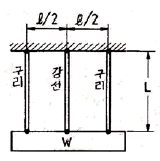
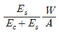
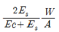
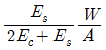
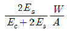
(정답률: 39%)
27. 그림과 같은 단면에서 대칭축 n-n에 대한 단면 2차 모멘트는?
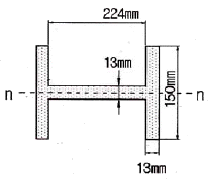
- 5.35×10-6m4
- 6.35×10-6m4
- 7.35×10-6m4
- 8.35×10-6m4
(정답률: 27%)
28. 그림에서 P가 1200N, b = 3cm, h = 4cm, e = 1cm라 할 때 최대 압축응력은 몇 N/cm2인가?
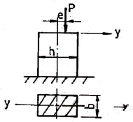
- 250
- 200
- 150
- 100
(정답률: 6%)
29. 그림과 같이 중앙에 집중 하중 P[N]와 균일분포 하중ω[N/m]가 동시에 작용하는 단순보에서 최대 처짐은? (단, ωl= 2P 이고, 보의 굽힘강성 EI는 일정하다.)
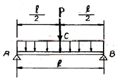
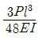
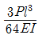
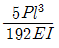
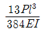
(정답률: 59%)
30. 다음 그림과 같은 길이 L = 30 cm, 횡단면이 0.06x 2.5cm인 얇은 강철자의 양단에 우력(moment)을 작용시켜 중심각 θ = 60° 인 원호의 꼴로 굽히면 강철자에 발생하는 최대응력은 약 몇 MPa 인가? (단, 탄성계수 E = 210 GPa 이며, 굽힘강성 EI는 일정하다.)
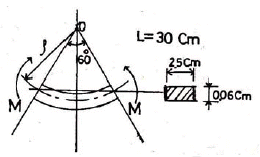
- 177
- 190
- 207
- 220
(정답률: 12%)
31. 그림과 같이 외팔보의 끝에 집중하중 P가 작용할때 자유단에서의 처짐각 θ는? (단, 보의 굽힘강성 EI 는 일정하다.)
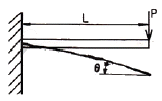
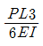
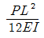
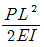
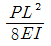
(정답률: 34%)
32. 길이 500mm, 지름 16mm의 균일한 강봉의 양 끝에 12kN의 축 방향 하중이 작용하여 길이는 300 μm가 증가하고 지름은 2.4 μm가 감소하였다. 이 선형 탄성 거동하는 봉 재료의 프와송 비(Poisson’s ratio)는?
- 0.22
- 0.25
- 0.29
- 0.32
(정답률: 43%)
33. 외팔보의 자유단에 하중 P가 작용할 때, 이 보의 굽힘에 의한 탄성 변형에너지를 구하면? (단, 보의 굽힘강성 EI 는 일정하다.)
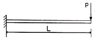
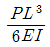
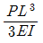
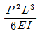
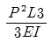
(정답률: 32%)
34. 그림과 같이 1000 N의 힘이 브래킷의 A에 작용하고 있다. 이 힘의 점 B에 대한 모멘트는 몇 N⦁m 인가?
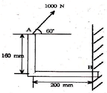
- 160
- 200
- 238.6
- 253.2
(정답률: 8%)
35. 다음과 같은 장주(long column)에 하중 Pcr을 가했더니 오른쪽 그림과 같이 좌굴이 일어났다. 이 때 오일러 좌굴하중 Pcr은? (단, 탄성계수는 E, 관성모멘트는 I, 길이는 L이다.)
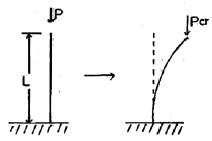
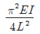
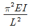
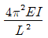
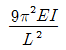
(정답률: 38%)
36. 그림과 같은 단면의 축이 전달할 수 있는 토크(torque)의 비 TA/TB의 값은 얼마인가? (단, 재질은 서로 같다.)
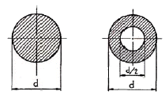
- 15/16
- 9/16
- 16/15
- 16/9
(정답률: 50%)
37. 단면의 가로, 세로가 20mm, 30mm인 사각 단면 부재에 축 방향 하중 60kN을 작용하였다. 이 부재에 작용하는 응력은 몇 MPa 인가?
- 0.1
- 1
- 10
- 100
(정답률: 24%)
38. 선형 탄성 재질의 정사각형 단면봉에 1000 kN의 압축력이 작용할 때 100MPa의 압축응력이 생기도록 하려면 한 변의 길이는 몇 cm로 해야 하는가?
- 5
- 10
- 15
- 20
(정답률: 58%)
39. 길이가 L인 양단 고정보의 중앙에 집중 하중이 아래로 가해져 중앙에 모멘트 M 이 발생하였다면 이 집중하중의 크기는 어떻게 표현되는가?
- M/L
- 2M/L
- 4M/L
- 8M/L
(정답률: 30%)
40. 그림과 같은 선형 탄성 균일단면 외팔보의 굽힘 모멘트 선도로 가장 적당한 것은?
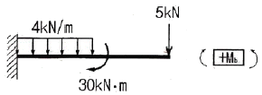
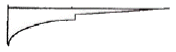
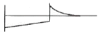
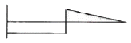
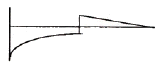
(정답률: 36%)
3과목: 용접야금
41. 후판의 용접비드 중심부에서의 주상정(柱狀晶)이 직립(直立)에 가까이 하는 경우를 바르게 설명한 것은?
- 용접속도가 감소하고 용접비드 두께가 작을수록
- 용접속도가 증대하고 용접비드 두께가 클수록
- 용접속도가 감소하고 온도확산율이 클수록
- 용접속도가 증가하고 온도확산율이 클수록
(정답률: 60%)
42. 상온가공에 의하여 내부응력을 일으킨 결정입자가 가열에 의하여 그 모양은 바뀌지 않고 내부응력이 감소되어 가는 과정을 무엇이라 하는가?
- 재결정
- 회복
- 결정립성장
- 다결정화
(정답률: 50%)
43. 다음 중 야금학적으로 용접하기 어려운 주철은?
- 회주철
- 구상흑연주철
- 미하나이트주철
- 가단주철
(정답률: 54%)
44. 은점(fish eye)의 생성을 방지하기 위한 방법으로 틀린 것은?
- 저수소계 용접봉을 사용한다.
- 모재를 예열한다.
- 용접 후 풀림처리 한다.
- 수소방출을 방지한다.
(정답률: 91%)
45. 테르밋 용접(thermit welding)에서 슬래그로 부상하는 것은?
- ZnCl2
- Al2O3
- TiO2
- CaO
(정답률: 79%)
46. 피복아크 용접봉의 피복제에 포함되어 있는 주요 성분이 아닌 것은?
- 아크 안정제
- 탈황제
- 고착제
- 슬래그 생성제
(정답률: 57%)
47. 다음 중 용융금속의 결정을 미세화 시키는 방법이 아닌 것은?
- 자기교반에 의한 방법
- 초음파 진동에 의한 방법
- 실드 가스로 Ar을 사용하는 방법
- 합금원소를 첨가하는 방법
(정답률: 75%)
48. 탄산가스 아크 용접재료인 솔리드 와이어(solidwire) 제조 시 탈산제로 사용하지 않는 것은?
- 티타늄(Ti)
- 규소(Si)
- 망간(Mn)
- 텅스텐(W)
(정답률: 59%)
49. 다음 중 고온균열(hot cracking)에 관한 설명으로 틀린 것은?
- 균열면은 산화가 심하다.
- 주로 입계균열이다.
- 크레이터부에서 주로 발생한다.
- 전형적인 비드 밑 균열이다.
(정답률: 78%)
50. 용접부의 현미경 조직과 기계적 성질이 현저하게 변화하는 영역으로 취성이 가장 큰 부분은?
- 용착금속
- 주조부
- 열영향부
- 모재
(정답률: 72%)
51. 가스용접에 사용되는 용제의 설명으로 틀린 것은?
- 용제의 융점은 모재의 융점보다 낮은 것이 좋다.
- 용접 중에 생기는 비금속 개재물을 용해하여 용융 온도가 높은 슬래그를 만든다.
- 용융금속의 표면에 떠올라 용착금속의 성질을 양호하게 한다.
- 용제는 건조한 분말, 페이스트 또는 용접봉 표면에 피복한 것도 있다.
(정답률: 43%)
52. 전율고용체 합금의 비평형 응고는 두 가지 원소가 결정립 내에 불균일하게 분포하는 무슨 현상을 초래하는가?
- 편석
- 공정
- 공석
- 편정
(정답률: 75%)
53. 표면경화 열처리에서 침탄법의 종류에 속하지 않는 것은?
- 고체침탄법
- 가스침탄법
- 액체침탄법
- 화염침탄법
(정답률: 35%)
54. 4.3%C 의 공정성분인 액체가 1130℃에서 응고하여 생기는 철-탄화철계의 공정조직으로 세립의 오스테나이트와 시멘타이트가 혼합된 조직은?
- 펄라이트(pearlite)
- 트루스타이트(troostite)
- 레데부라이트(ledeburite)
- 페라이트(ferrite)
(정답률: 65%)
55. 용접금속에서 질소의 영향을 생기는 것이 아닌 것은?
- 변형시효
- 청열취성
- 풀림취성
- 은점(fish eye)
(정답률: 74%)
56. 다음 중 탄소강의 표준조직이 아닌 것은?
- 페라이트
- 펄라이트
- 레데부라이트
- 시멘타이트
(정답률: 69%)
57. 다음 중 침입형 고용체에 용해되는 원소가 아닌 것은?
- N
- C
- W
- H
(정답률: 88%)
58. 용착금속 내에 유황편석에 의한 설퍼 크랙을 방지 하기 위한 가장 적당한 방법은?
- 용착금속 내에 수소가 흡수되지 않도록 한다.
- 용접 모재로 림드강 강판을 사용한다.
- 자동용접을 실시한다.
- 플럭스를 사용하지 않는다.
(정답률: 50%)
59. 용접전류가 200A, 용접전압이 30V, 용접속도가 15cm/min일 때 용접입열은 얼마인가? (단, 열효율은 100% 라고 가정한다.)
- 20000 J/cm
- 22000 J/cm
- 24000 J/cm
- 26000 J/cm
(정답률: 65%)
60. 피복제의 염기도에 대한 용착 금속의 내균열성이 가장 우수한 용접봉은?
- 저수소계
- 고산화티탄계
- 고셀룰로오스계
- 일루미나이트계
(정답률: 83%)
4과목: 용접구조설계
61. 용접이음의 설계를 할 때의 홈의 형상으로 올바르게 구성된 것은?
- Z형, K형, L형, T형
- I형, V형, U형, H형
- G형, X형, J형, P형
- B형, U형, K형, M형
(정답률: 100%)
62. 다음 변형 중 면외 변형의 종류가 아닌 것은?
- 세로 굽힘 변형
- 수축 변형
- 좌굴 변형
- 비틀림 변형
(정답률: 24%)
63. 용접 구조물의 조립순서를 정할 때 고려사항으로 적절하지 않은 것은?
- 가능한 큰 구속용접을 한다.
- 구조물의 형상을 고정하고 지지할 수 있어야 한다.
- 변형 및 잔류응력을 경감할 수 있는 방법을 채택한다.
- 용접이음 형상을 고려하여 적절한 용접법을 선택한다.
(정답률: 93%)
64. 잔류응력 측정법 중에는 정성적 방법과 정량적 방법이 있는데 정량적 방법에 속하는 것은?
- 부식법
- 응력 이완법
- 자기적 방법
- 경도에 의한 방법
(정답률: 36%)
65. 비커즈 경도 시험에 사용되는 다이아몬드 사각추압입자의 꼭지각은?
- 100°
- 120°
- 136°
- 150°
(정답률: 69%)
66. 용접 자세의 기호에서 수평 자세를 뜻하는 기호는?
- O
- V
- F
- H
(정답률: 100%)
67. 용접시의 판상의 온도분포에 대한 설명으로 옳지 못한 것은?
- 용접열원 부근의 온도는 대단히 높다.
- 열원에서 멀어질수록 온도는 낮아지고 있다.
- 온도기울기의 대소는 이음부의 형상이나 용접하는 금속에 따라 달라진다.
- 열원전방 부근에서는 온도구배가 완만하다.
(정답률: 70%)
68. 와전류 탐상검사의 장점에 대한 설명으로 틀린 것은?
- 결함의 크기, 두께 및 재질의 변화 등을 동시에 검사할 수 있으며 응용분야가 넓다.
- 봉, 파이프 및 선재 등을 생산라인에서 모두 자동검사할 수 있다.
- 검사체의 표면으로부터 깊은 내부결함과 강자성금속도 탐상이 가능하다.
- 결함지시가 모니터에 전기적 신호로 나타나므로 기록보존과 재생이 용이하다.
(정답률: 63%)
69. 용접작업에서 용접봉의 용착효율을 나타내는 식은?
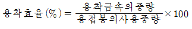
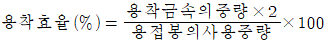
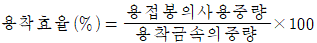
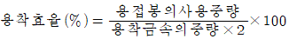
(정답률: 48%)
70. 다음 그림과 같은 단면에서 단위 목 두께에 대한 단면 2차 모멘트(Ix)는?
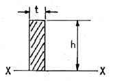
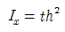
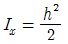
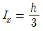
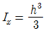
(정답률: 62%)
71. W1 = 용접슬래그 및 스패터 등을 완전히 제거하여 깨끗이 한 시험편의 무게(g), Wo = 용접전의 시험편의 무게(g), ΣT = 용접봉 5개분의 시간의 합계일 때, 용착속도(d)를 구하는 식으로 옳은 것은?
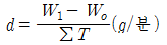
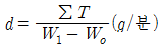
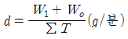
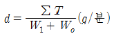
(정답률: 50%)
72. 취약한 래커를 표면에 바르고 물체에 구멍을 뚫으면 이에 의하여 응력이 변화하고 래커가 주 응력선에 직각으로 금이 가게 되는 것을 이용하여 잔류응력을 측정하는 방법은?
- 응력 이완법
- 응력 와니스법
- 부식법
- 자기적 방법
(정답률: 88%)
73. 용접이음의 피로강도를 향상시키기 위한 조치로 틀린 것은?
- 용접이음부의 단면이 급변하는 부분을 피할 것
- 응력집중부에는 가급적 용접이음을 피할 것
- 열처리 등을 이용하여 잔류응력을 완화 시킬 것
- 기계가공 등에 의하여 기계적인 강도를 낮출 것
(정답률: 83%)
74. 방사선투과시험에서 방사선에서 촬영한 사진이 기준이상으로 되었는지를 판단하는 기구로서 검사체와 동일한 금속판에 직경이 다른 구멍을 뚫은 것을 무엇이라 하는가?
- 계조계
- 투시계
- 투과도계
- 감식계
(정답률: 87%)
75. 용접부의 시험에서 기계적 시험법이 아닌 것은?
- 인장 시험
- 굽힘 시험
- 부식 시험
- 충격 시험
(정답률: 88%)
76. 저온균열과 고온균열(hot crack)의 설명을 맞는 것은?
- 300℃ 이하에서 발생하는 균열은 저온균열이다.
- 고온균열은 용접금속이 응고 후 48시간 이내에 발생하는 균열이다.
- 고온균열은 수축응력이나 열 변형에 의한 응력집중 등의 원인으로 인하여 발생하는 균열이다.
- 설퍼크랙(sulfur crack)은 저온균열이다.
(정답률: 40%)
77. 땜납의 구비조건에 대한 설명으로 틀린 것은?
- 모재보다 용융점이 높을 것
- 유동성이 좋고 금속과의 친화력이 있을 것
- 접합강도가 우수할 것
- 강인성, 내식성이 좋을 것
(정답률: 74%)
78. 다음 그림과 같이 강판의 두께 10mm에 인장하중 80000N을 작용시키고자 양면 겹치기 용접이음을 하고자 한다. 용접부 허용응력을 50N/mm2라 할 때 필요한 용접길이 l는 약 얼마인가?
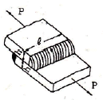
- 23.1mm
- 213.1mm
- 13.1mm
- 113.1mm
(정답률: 40%)
79. 용접설계자가 알아야할 용접방법 중 틀린 것은?
- 가능한 아래보기 자세로 용접할 것
- 부재 전체에 가능한 열의 분포가 일정하게 되도록 할 것
- 용접진행은 부재의 자유단에서 고정단으로 할 것
- 용접 보조기구 및 장비를 사용하여 작업조건을 좋게 할 것
(정답률: 100%)
80. 용접 잔류응력을 경감하는 방법 중 틀린 것은?
- 용착금속의 양을 많게 한다.
- 적당한 예열을 한다.
- 풀림(annealing)을 한다.
- 적당한 용착법과 용접순서를 선택한다.
(정답률: 100%)
5과목: 용접일반 및 안전관리
81. 강재의 표면 흠집이나 개재물, 탈탄층 등을 제거하기 위하여 가능한 한 얇게 표면을 깎아내는 가스 가공법을 무엇이라 하는가?
- 가스 가우징
- 산소창 가공
- 아크 에어 가우징
- 스카핑
(정답률: 82%)
82. 다음 중 피복 아크 용접봉 심선재의 화학성분에 속하지 않는 것은?
- C
- Si
- Mn
- Al
(정답률: 42%)
83. 산소병 운반 및 취급상 주의할 사항으로 틀린 것은?
- 충격을 방지하여야 한다.
- 산소병을 뉘여서 운반한다.
- 밸브에 그리스, 기름을 묻혀서는 안된다.
- 이동할 때는 산소밸브를 반드시 잠근다.
(정답률: 95%)
84. 티그(TIG) 용접에서 핫 와이어 용접(Hot Wire Welding)이란 어떤 용접인가?
- 연속적으로 공급되는 용가 와이어(filler wire)를 예열시켜 용접하는 것
- 연속적으로 공급되는 용가 와이어를 전극봉으로 사용하는 것
- 전극봉으로 토륨 –텅스텐 합금을 사용하는 것
- 맥동(pulse)직류로 티그 용접하는 것
(정답률: 62%)
85. 피복 아크 용접결함 중 기공의 원인으로 가장 거리가 먼 것은?
- 용접부의 급속한 응고
- 모재가운데 유황 함유량 과다
- 과대 전류의 사용
- 용접속도가 느리다.
(정답률: 71%)
86. 전기저항 용접 중 겹치기 이음으로 틀린 것은?
- 점(spot)용접
- 심(seam)용접
- 돌기(projection)용접
- 퍼커션(percussion)용접
(정답률: 65%)
87. 서브머지드 아크 용접에서 용접 시험편의 홈의 각도 공차는 얼마 이내 인가?
- ±5° 이내
- ±10° 이내
- ±15° 이내
- ±20° 이내
(정답률: 54%)
88. 용접기의 1차 측에는 안전스위치와 퓨즈를 설치하여야 하는데, 용접기가 27kVA 이고 1차 입력전압이 300V 일 때 퓨즈 용량은?
- 50A
- 70A
- 90A
- 100A
(정답률: 74%)
89. 발전형 직류 아크 용접기의 특징에 대한 설명으로 틀린 것은?
- 완전한 직류를 얻는다.
- 보수와 점검이 어렵다.
- 고장이 적으나 정류기 파손에 주의해야한다.
- 회전하므로 고장 나기가 쉽고 소음이 난다.
(정답률: 32%)
90. 다음 가연성 가스 중 공기보다 무거운 가스는?
- 아세틸렌
- 수소
- 프로판
- 메탄
(정답률: 73%)
91. 아르곤 보호가스 분위기에서 불활성 가스 금속 아 크 용접을 할 경우 전류 값이 높을 때 많이 나타나는 용적이행 형태에 해당 되는 것은?
- 스프레이 이행
- 단락 이행
- 연속 이행
- 입상 이행
(정답률: 53%)
92. 연강용 피복 아크 용접봉 종류에 관한 설명 중 올바르지 않은 것은?
- 일루미나이트계는 슬래그 생성계이며 모든 자세의 용접에 사용되며 교량 및 압력용기의 용접에 사용된다.
- 고산화티탄계는 피복제 중에 산화티탄을 약 35%정도 포함한 용접봉으로 일반 경구조물 용접에 많이 사용된다.
- 저수소계는 강력한 탈산작용으로 산소량이 많아 습기에 강하고 후판용접에 좋다.
- 고셀룰로오스계는 가스실드계로서 슬래그 생성량이 적어 좁은 홈의 용접에 우수한 작업성을 나타낸다.
(정답률: 65%)
93. 산소 –아세틸렌 가스불꽃의 최고온도(℃)범위로 가장 적당한 것은?
- 2000 ~2500℃
- 3000 ~3500℃
- 4000 ~4500℃
- 5000 ~5500℃
(정답률: 89%)
94. 다음 중 아크 용접기를 설치해도 되는 장소에 대한 설명으로 맞는 것은?
- 옥외에서 비바람이 치는 장소
- 휘발성 기름이나 가스가 존재하는 장소
- 폭발성 가스가 존재하는 장소
- 주위 온도가 0℃ 정도인 장소
(정답률: 100%)
95. 용접부 시험방법 중 용접성 시험의 종류가 아닌 것은?
- 용접경화성시험
- 용접연성시험
- 설퍼프린트시험
- 용접균열시험
(정답률: 100%)
96. 간이 자동화 용접법인 중력식 용접법(gravity welding)에 주로 사용되는 피복 아크 용접봉의 종류로 가장 적당한 것은?
- 철분산화철계 용접봉
- 일루미니아트계 용접봉
- 저수소계 용접봉
- 고셀룰로오스계 용접봉
(정답률: 42%)
97. 연강용 가스용접봉의 성분 중 강의 강도를 증가시키나 연신율, 굽힘성 등은 감소시키는 원소는?
- 인(P)
- 유황(S)
- 규소(Si)
- 탄소(C)
(정답률: 63%)
98. 다음 중 경납용 용제(Flux)에 해당되는 것은?
- 염화아연(ZnCl2)
- 붕사(Na2B4O7,10H2O)
- 염산(HCl)
- 인산(H3PO4)
(정답률: 69%)
99. 납땜의 종류를 연납땜과 경납땜으로 구분하는 땜 납의 융접온도는 몇 ℃ 인가?
- 350℃
- 400℃
- 450℃
- 500℃
(정답률: 86%)
100. 무부하 전압 80V, 아크 전압 40V, 아크 전류 300A의 경우 역율은 약 몇 % 인가? (단, 내부손실은 4kW이다.)
- 54%
- 67%
- 77%
- 82%
(정답률: 48%)